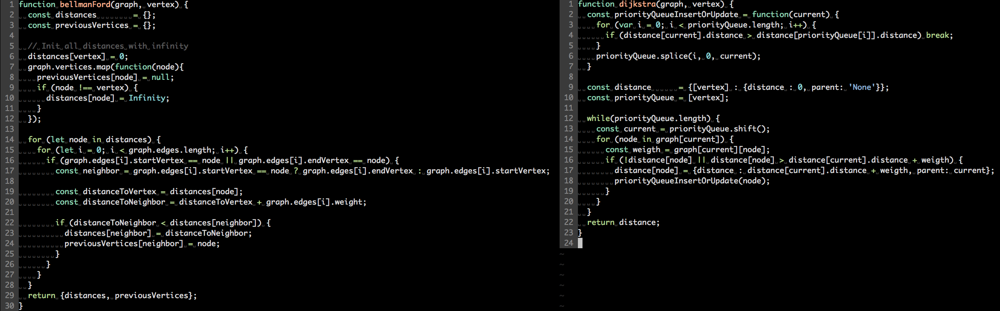

Dijkstra vs BFS vs DFS vs Bellman-Ford in JS ES6
Dijkstra vs BFS vs DFS vs Bellman-Ford in JS ES6
In this topic, we’re review graph search, traversal, and explore algorithm implementations in JS ES6.
Candidates:
- Dijkstra’s algorithm
- Breadth-first search algorithm
- Depth-first search algorithm
- Bellman-Ford algorithm
All code & test provide from this repository.
Graphs Overview
A Graph consists of vertices(nodes) and edges.

Lets describe Graphs types for algorithm candidates:
- A Undirected Graph
- A Directed Graph
- Directed Acyclic Graphs(DAG) - are directed graphs with no directed cycles.
- Weighted DAG(directed networks)
- Weighted DAG with negative edges
Each of graph type has a different representation, API and problem solved. Lets code non-recursive implementation for algorithm candidates and connect with Graphs type API.
Depth-first search
Depth-first search (DFS) an algorithm for traversing or searching graph or tree. It uses a stack, and it delays checking whether a vertex has been discovered until the vertex is popped from the stack rather than making this check before adding the vertex.
Time Complexity: O(E+V)
Graph type:
- Undirected Graph
- Directed Acyclic Graphs(DAG) without weigth
function depthFirstSearchTraversal(graph, vertex) {
const distance = {[vertex] : {distance : 0, parent: 'None'}};
const stack = [vertex];
while(stack.length) {
const current = stack.pop();
for (let i = 0; i < graph[current].length; i++) {
const node = graph[current][i];
stack.push(node);
if (!distance[node]) {
distance[node] = {
distance : distance[current].distance + 1,
parent : current
};
}
}
}
return distance;
}Example using:
- Topological sorting
- Maze
- Finding strongly connected components
- Generating words in order
Breadth-first search
Breadth-first search (BFS) is an algorithm for traversing or searching tree or graph data structures. It uses a queue.
Time Complexity: O(E+V)
Graph type:
- Undirected Graph
- Directed Acyclic Graphs(DAG) without weigth
function breadthFirstSearchTraversal(graph, vertex) {
const distance = {[vertex] : {distance : 0, parent: 'None'}};
const queue = [vertex];
while(queue.length) {
const current = queue.shift();
for (let i = 0; i < graph[current].length; i++) {
const node = graph[current][i];
if (!distance[node]) {
distance[node] = {
distance : distance[current].distance + 1,
parent : current
};
queue.push(node);
}
}
}
return distance;
}Example using:
- Shortest Path
- Copying garbage collection
- Serialization
Dijkstra’s algorithm
Dijkstra’s algorithm is for finding shortest Path between nodes in the Graphs. It picks the unvisited vertex with the lowest distance, calculates the distance through it to each unvisited neighbor, and updates the neighbor’s distance if smaller. It uses a Priority queue.
Time Complexity: O(E+V log V)
Graph type:
- non-negative weighted DAG
function dijkstra(graph, vertex) {
const priorityQueueInsertOrUpdate = function(current) {
for (var i = 0; i < priorityQueue.length; i++) {
if (distance[current].distance > distance[priorityQueue[i]].distance) break;
}
priorityQueue.splice(i, 0, current);
}
const distance = {[vertex] : {distance : 0, parent: 'None'}};
const priorityQueue = [vertex];
while(priorityQueue.length) {
const current = priorityQueue.shift();
for (node in graph[current]) {
const weigth = graph[current][node];
if (!distance[node] || distance[node] > distance[current].distance + weigth) {
distance[node] = {distance : distance[current].distance + weigth, parent: current};
priorityQueueInsertOrUpdate(node);
}
}
}
return distance;
}Example using:
- Shortest path
Implementation pattern
This 3 algorithms has similar code structure. Main different in “order” type data structure:
- Stack - Depth-first search ((O(E+V)))
- Queue - Breadth-first search (O(E+V))
- Priority Queue - Dijkstra’s algorithm (O(E+V log V))
 Compare code implementation Depth-first search vs Breadth-first search vs Dijkstra’s algorithm.
Compare code implementation Depth-first search vs Breadth-first search vs Dijkstra’s algorithm.
Bellman-Ford
The Bellman–Ford algorithm is an algorithm that computes shortest paths from a single source vertex to all of the other vertices in a weighted digraph. It uses 2 for loop, what makes time complexity Vertex * Edges in worst cases.
Time Complexity: O(VE)
Graph type:
- negative or positive weighted DAG
function bellmanFord(graph, vertex) {
const distances = {};
const previousVertices = {};
// Init all distances with infinity
distances[vertex] = 0;
graph.vertices.map(function(node){
previousVertices[node] = null;
if (node !== vertex) {
distances[node] = Infinity;
}
});
for (let node in distances) {
for (let i = 0; i < graph.edges.length; i++) {
if (graph.edges[i].startVertex == node || graph.edges[i].endVertex == node) {
const neighbor = graph.edges[i].startVertex == node ? graph.edges[i].endVertex : graph.edges[i].startVertex;
const distanceToVertex = distances[node];
const distanceToNeighbor = distanceToVertex + graph.edges[i].weight;
if (distanceToNeighbor < distances[neighbor]) {
distances[neighbor] = distanceToNeighbor;
previousVertices[neighbor] = node;
}
}
}
}
return {distances, previousVertices};
}Example using:
- Shortest path
Implementation pattern
Bellman-Ford similar to Dijstra’s except that instead of utilizing a Priority Queue to visit nodes in order, Bellman-Ford looping iterates over every edge V times each, ensuring that all negative edge weights.
Time Complexity different: O(E+V log V) vs O(VE)
 Compare code implementation Bellman-Ford vs Dijkstra’s algorithm.